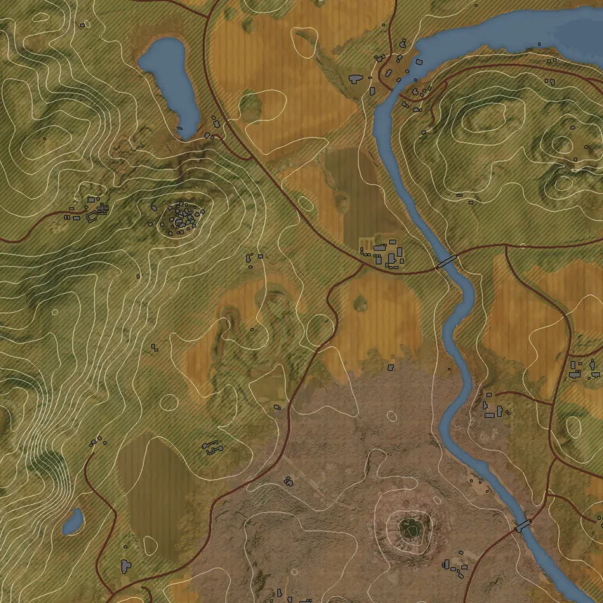
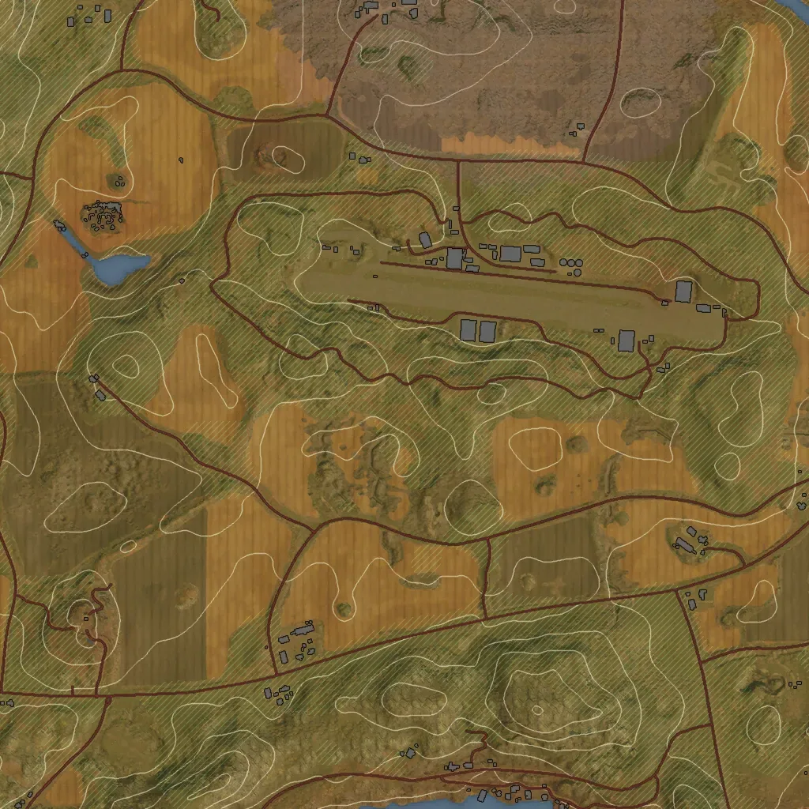
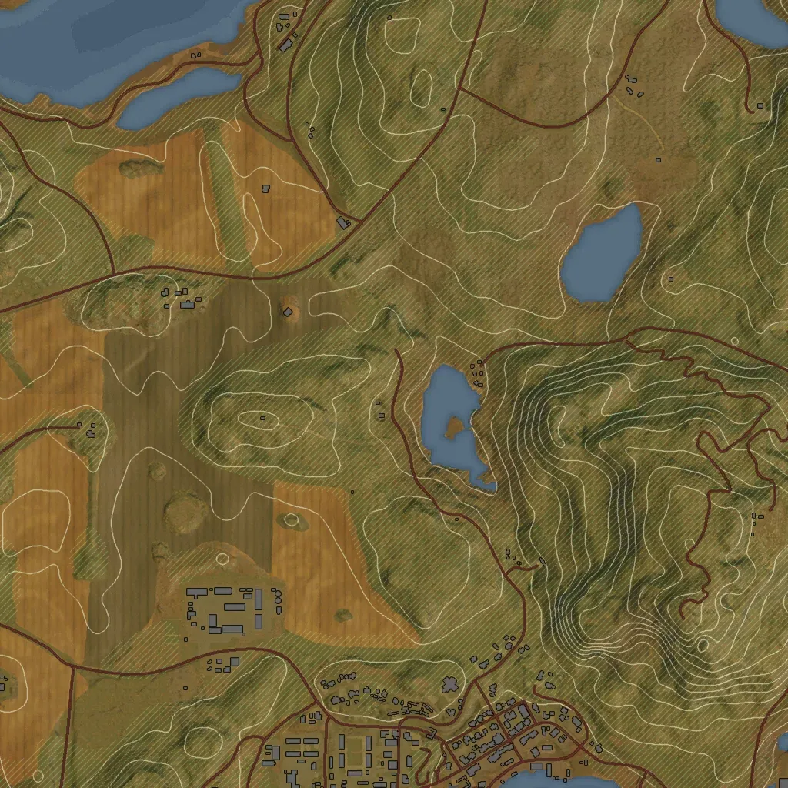
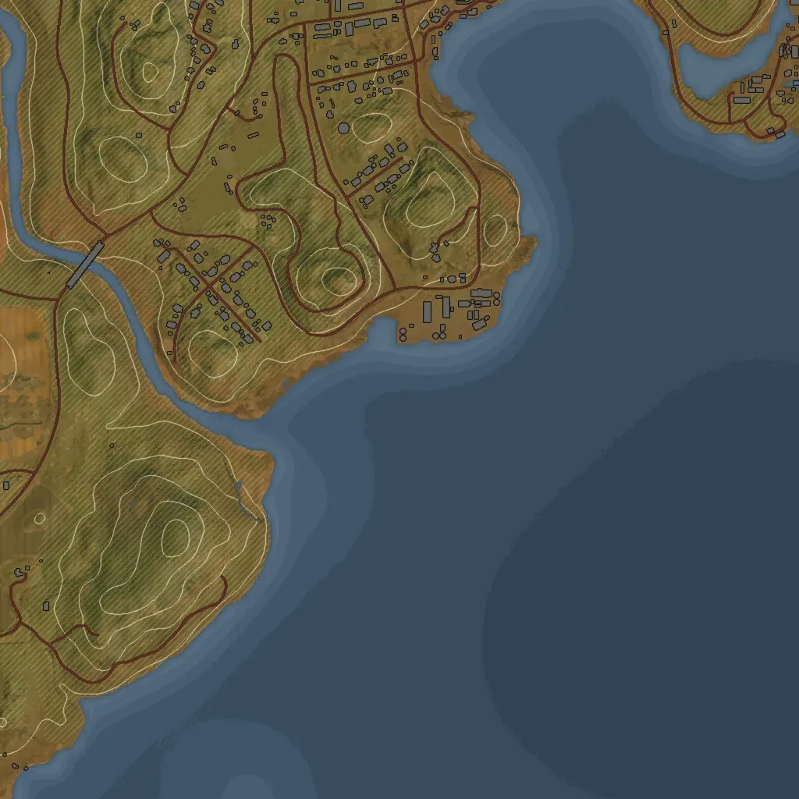
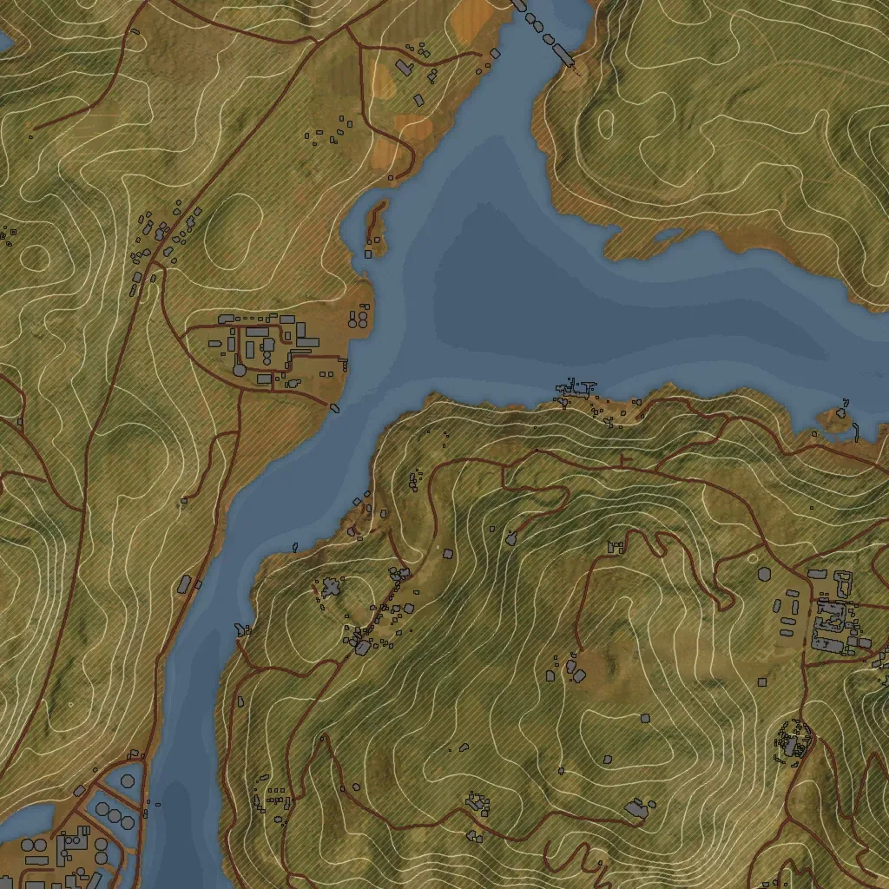
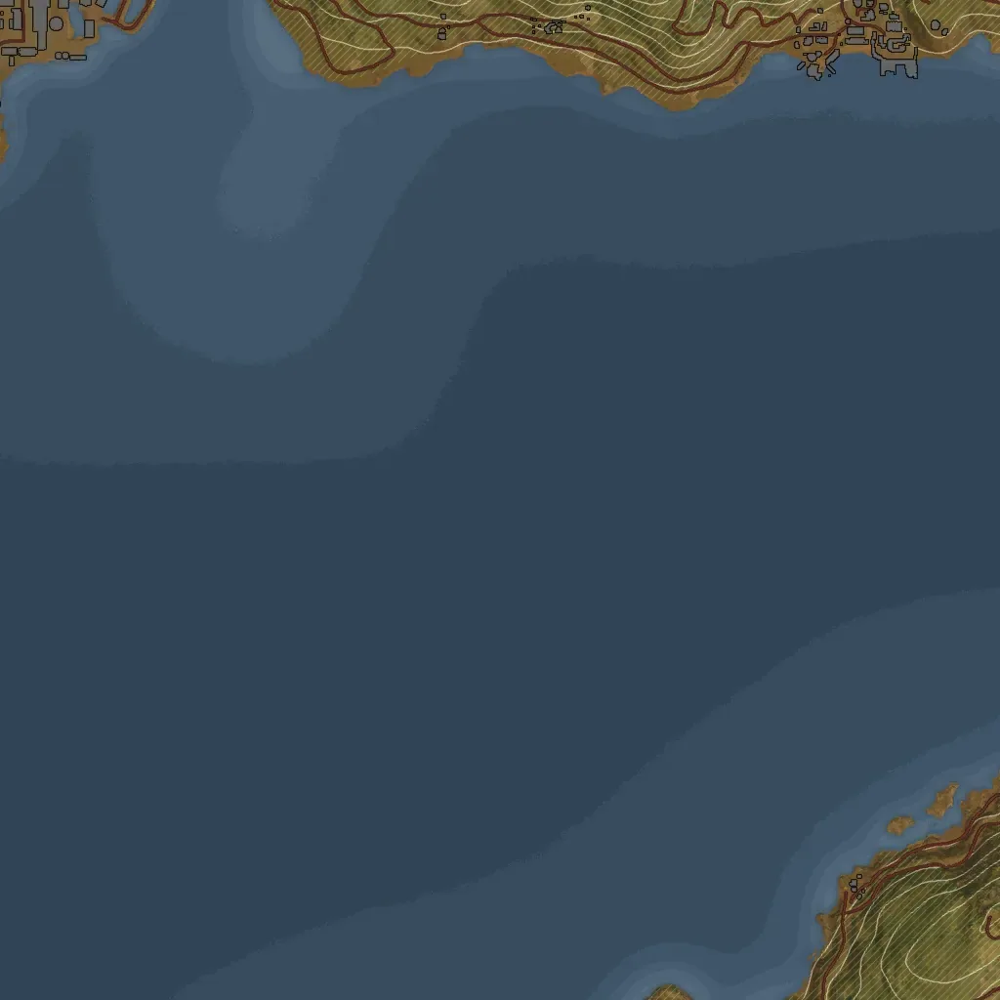

Map10 pickups
The numbers are the # of the list below: hover a pin for its name, click it to jump to it. Open the full map shows only this type on the interactive map; the coordinates in the list open it on that pickup.






All newspapers
Nearest location is the closest named place and how far and in which direction the pickup lies from it. Click a header to sort.
| # | Name | Nearest location | Map (x, z) |
|---|---|---|---|
| 1 | Newspaper 01 | at Östervik Gamla Stan | 1334, -148 |
| 2 | Newspaper 02 | 100 m NE of Kyrkparken | 1186, -108 |
| 3 | Newspaper 03 | 168 m W of Markbacken | 730, -13 |
| 4 | Newspaper 04 | 42 m SW of Österviks Hamn | 1251, -14 |
| 5 | Newspaper 05 | at Tornberget | 1006, 457 |
| 6 | Newspaper 06 | 116 m S of Kyrkparken | 1121, 50 |
| 7 | Newspaper 07 | at Kyrkparken | 1120, -77 |
| 8 | Newspaper 08 | 42 m N of Kyrkhöjden | 1174, -286 |
| 9 | Newspaper 09 | 113 m SW of Haga | 842, 292 |
| 10 | Newspaper 10 | 93 m NE of Markbacken | 961, -109 |